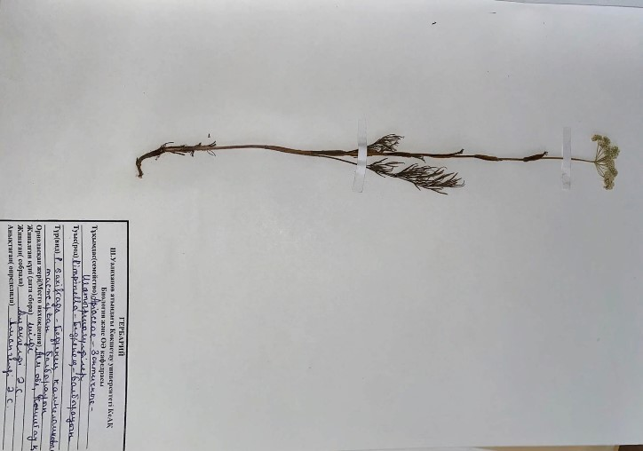

Тасжарған балбырауын - Pimpinella saxifraga L - Бедренец камнеломковый

Биологиялық сипаттамасы: Тамырсабақ көпбасты, тамыры тармақталған, қоңыр, ұзындығы 20 см-ге дейін және ені 1,5 см - ге дейін, тамыр мойны өлі жапырақтардың талшықты қалдықтарымен жабылған. Сабағының биіктігі 15-80 см, тік, қуыс, дөңгелек, жіңішке қырлы, тығыз, тармақталған, тек төменгі бөлігінде жапырақты, жоғарғы жағында жапырақсыз, жапырақтарымен бірге қысқа түкті немесе жалаңаш. Жапырақтары қауырсынды. Төменгі жапырақтары, ұзындығы 10-20 см, жұмыртқа тәрізді немесе дөңгелек-жұмыртқа тәрізді, доғал, дөрекі тісті. Орташа бағаналы жапырақтары аз, тар тереңірек бөлінеді, негізі сына тәрізді, қауырсынды, қынапта отырады. Жоғарғы жағы-жай қауырсынды немесе үш бөліктен тұратын кішкентай ламинамен. Ең жоғарғы жапырақтары қысқарған ламинамен. 6-21 жұқа жалаңаш сәулелері бар, диаметрі 5-8 см, коримбозды қолшатырлар; орамалар жоқ. Жапырақтары ақ, сирек қызғылт, ұзындығы шамамен 1 мм, сырты қылшық-түкті, жоғарғы жағында ойық, ішке қарай иілген. Тұқымдар жалаңаш, қысқа жұмыртқа тәрізді, ұзындығы 2-2, 5 мм, ені 1-1, 5 мм. Маусым — тамыз айларында гүлдейді. Тұқымдар шілденің аяғында — тамыздың басында, жаппай пісу — тамыздың соңында піседі.
Таралу аймағы:Ол бүкіл Еуропада, Ресей мен Азияның қоңыржай климатында өседі. Қазақстанда шалғындарда, шалғынды далаларда, бұталардың арасында, шеттерінде, сирек жапырақты және қарағайлы ормандарда, төбелерде, құрғақ шалғындарда, ашық шөпті беткейлерде, жолдар мен егістіктердің шетінде кездеседі.